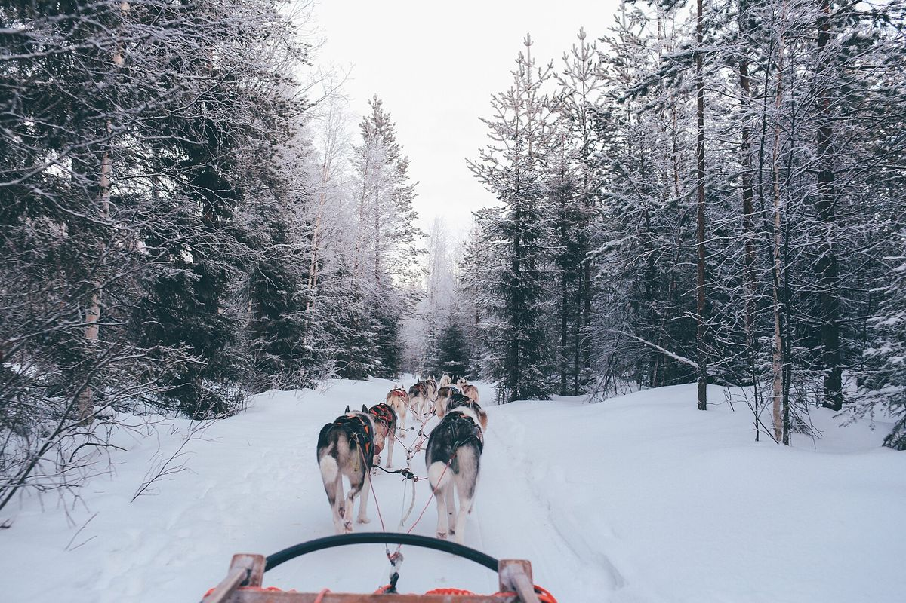
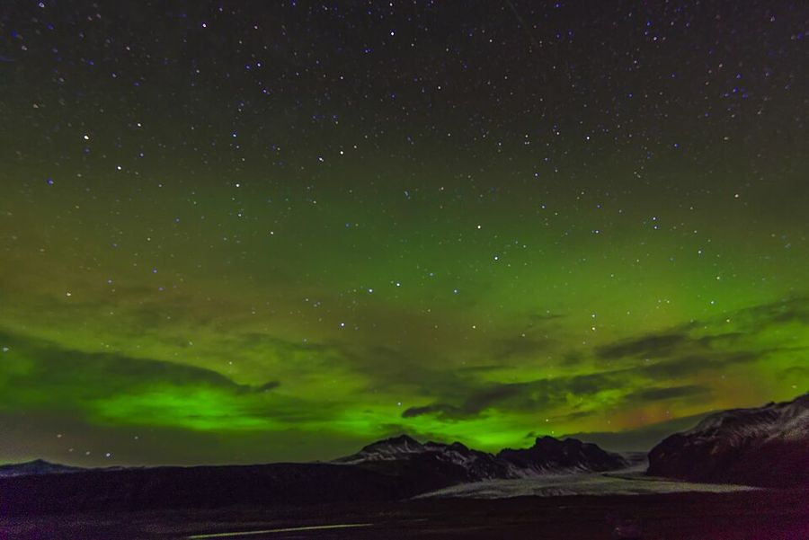
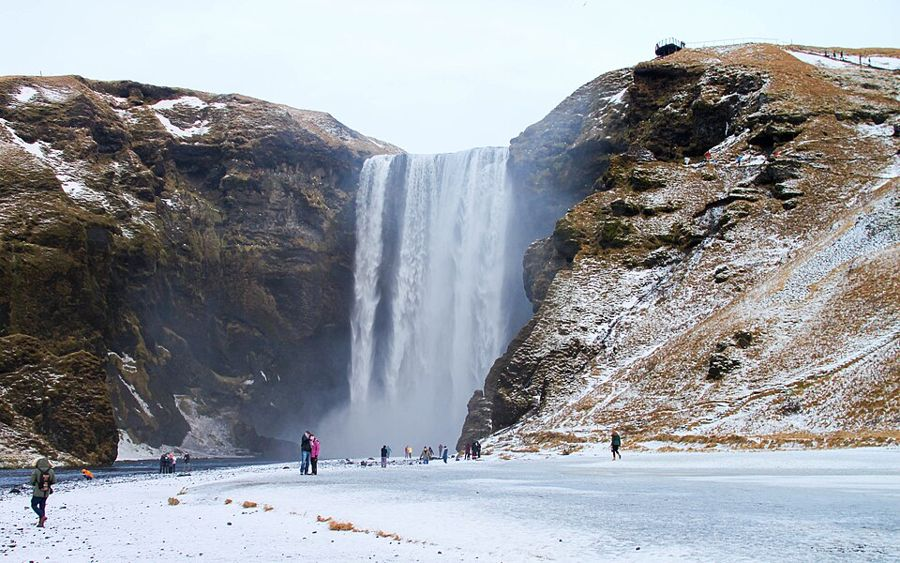
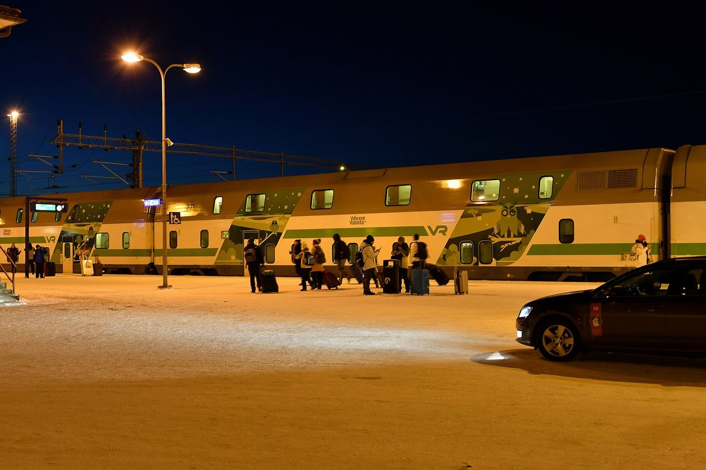
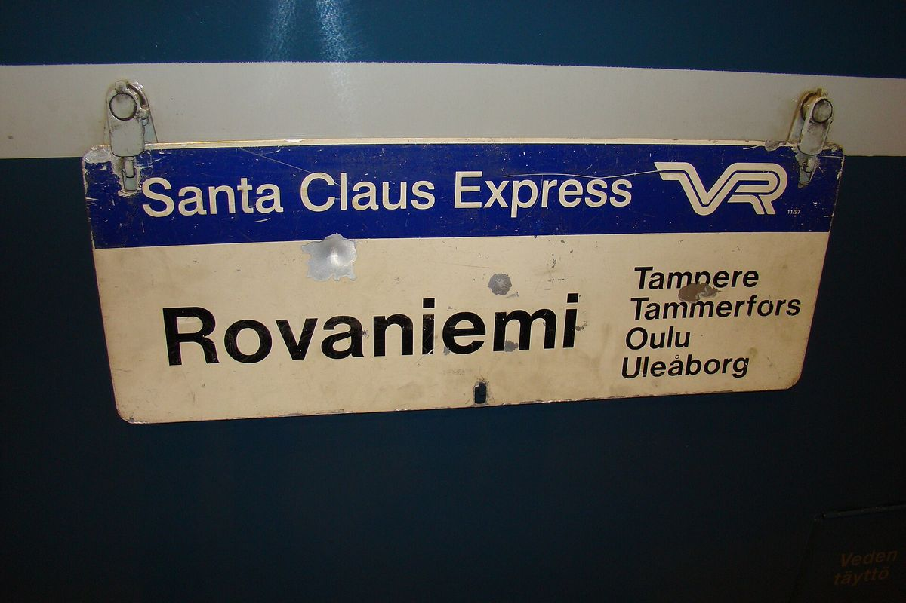
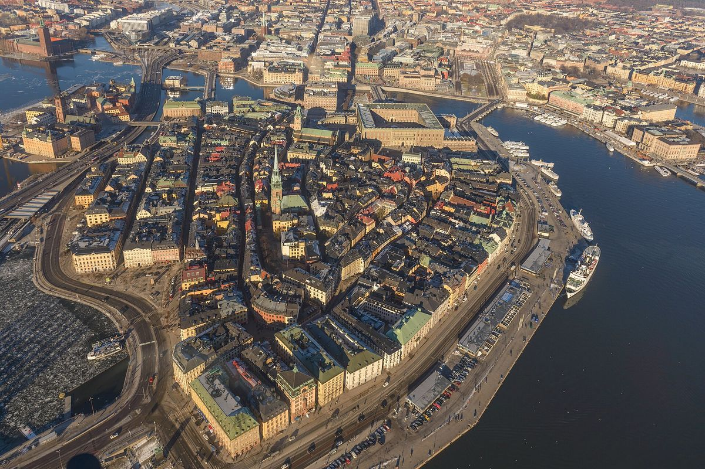

Recommendation
- If $15k is firm, take B (Iceland 7 nights → Helsinki → ship → Stockholm). It needs ~23 h of door-to-door flight transit over 3 flights (only C2 is lower, at ~21 h, and it costs ~$5k more) and Iceland at its best before Christmas. It's $17.0k likely, ~$14.5k with cuts. Lapland is swapped for Nordic cities, as suggested.
- If Lapland is a must, take D (Iceland first → Santa Claus Express → Lapland → ship to Stockholm). It's the cheapest way to have both: $21.1k likely, ~$17.8k with cuts, so about $3k over. After Iceland it's all trains and a ship. C2 (Lapland first, night trains, 12 Iceland nights) is the "maximum Iceland" version at ~$19.4k with cuts.
- Don't use Paris as the hub (A). Rovaniemi→Paris still connects in Helsinki, and Paris→Iceland after 12 Dec is $1,101 via London or $2,777 non-stop. It's the most transit (~33 h, 6 take-offs) and the most expensive.
- Leaning to D? See D7/D8: D7 (7 Iceland nights, Helsinki nights dropped) is $22.5k likely, $19.0k with cuts, $27.2k full experience.
- Experiences: see the tiered experience list. Most S-tier items (Santa, huskies, Golden Circle, south coast, aurora) are already in the likely totals. A "full experience" version (ranked by novelty and checked for ages 7 and 10: Katla FastTrack ice cave, Into the Glacier tunnel, glass igloo, snowmobile, longer reindeer safari, guided aurora; the glacier walk is out because it's 8+) adds about $2.3k–$4.5k: B $19.3k, D $25.8k, C2 $28.1k.
- Book first: easyJet CDG→KEF on 12 Dec ($489 now, "$846 cheaper than usual"), then the Iceland Christmas cabin, then any Lapland beds for 12–17 Dec.
Compare (AUD, whole family, excl. Qatar flights)
| Route (21 nights) | Flights | Flight transit* | Transit nights | Days lost | Likely | With cuts | Full experience | Fits $15k? |
|---|---|---|---|---|---|---|---|---|
| A. Paris hub: Lapland → Paris → Iceland | 4 6 take-offs | ~33 h | 1 | ~2.5 | $25.4k | $21.6k | $29.9k | ❌ no |
| B. Iceland + Helsinki + ship + Stockholm | 3 4 take-offs | ~23 h | 1 | ~1.5 | $17.0k | $14.5k | $19.3k | ✅ yes, with cuts |
| C1. Lapland → Iceland, flights via HEL | 3 4 take-offs | ~23 h | 0 | ~1.75 | $25.0k | $21.1k | $29.5k | ❌ no |
| C2. Lapland by night train → Iceland | 3 3 take-offs | ~21 h | 2 | ~1.5 | $23.6k | $19.4k | $28.1k | ❌ no |
| D. Iceland → Santa train → Lapland → ship | 4 5 take-offs | ~27 h | 2 | ~1.75 | $21.1k | $17.8k | $25.8k | ❌ no |
| D7. Iceland 7 nights → Lapland → ship | 4 | ~28 h | 2 | ~2 | $22.5k | $19.0k | $27.2k | no |
| D8. Iceland 8 nights → Lapland → ship | 4 | ~28 h | 2 | ~2 | $23.0k | $19.9k | $27.9k | no |
| D8-Paris. Iceland 8 nights → Lapland → ship | 4 | ~28 h | 2 | ~2.25 | $23.4k | $19.8k | $28.1k | no |
*Door to door for the flights only: about 1 h to and from each airport, 2 h at the airport before each flight, plus flight and connection time. Night trains and the ship are listed as transit nights; they replace hotel nights.
A. Paris as the hub: Lapland → back via Paris → Iceland
The literal "Paris hub", and the most transit



Low $17.1k · likely $25.4k · high $36.5k. Nights in transit: 1 (CDG airport hotel on 17 Dec). Useful days: about 18.5 of 21.
Why this route
- Why it doesn't work: Rovaniemi→Paris still connects in Helsinki, and Paris→Iceland on 17/18 Dec is $1,101 via London or $2,777 non-stop (against $489 on 12 Dec). Coming back through Paris adds a flight, a hotel night and about 10 hours.
- Order: Lapland first, because the Arctic is cheapest 12–17 Dec. Iceland then takes Christmas.
- Daylight: Rovaniemi ~2 h of sun, −10 °C. Iceland ~4 h, ~0 °C.
- Kids get: Santa, huskies, reindeer, then waterfalls, geysers, pools and aurora.
Where the money goes (likely)
- Lodging $9,300 (37%)
- Flights, trains, ship $5,400 (21%)
- Activities & sights $3,740 (15%)
- Food, car, transfers $6,920 (27%)
Day by day
- Thu 10 – Sat 12Paris
2 nights - Sat 12✈ CDG → Rovaniemi
easyJet non-stop 07:00–11:40, $2,019 for 4 (leave the hotel ~04:30) - Sat 12 – Thu 17Rovaniemi
5 nights - Thu 17✈ Rovaniemi → CDG
Finnair via Helsinki 18:25–22:40, $831 - Thu 17 – Fri 18CDG airport hotel
1 night - Fri 18✈ CDG → Keflavík
BA via London 11:40–17:05, $1,101 (Icelandair non-stop $2,777) - Fri 18 – Tue 29Iceland: Reykjavík 3 · Selfoss 6 (Christmas) · Reykjavík 2
11 nights - Tue 29✈ Keflavík → CDG
easyJet non-stop 08:30–12:55, $911 - Tue 29 – Thu 31CDG hotel
2 nights (last flexible)
Clean family rooms with parking (Booking.com, rated 8+)
- Paris 10–12 Dec (prepaid): sur les toits de Paris ~$220/night (9.0/10) · Novotel Paris 17 ~$280/night (8.0/10) Filtered median $335. A family room near the Eiffel Tower / 7th is ~$360–480.
- Rovaniemi 12–17 Dec: Santa Star apt ~$410/night (9.6/10) · APt 37 ~$470/night (9.3/10) · Bellarova Apartments IV ~$480/night (9.2/10) Filtered median $533 a night.
- Reykjavík (mid-Dec): Blue Mountain Apartments by Heimaleiga ~$160/night (8.8/10) · Icelandic Apartments by Heimaleiga ~$180/night (8.8/10) Filtered median about $250–262.
- Selfoss over Christmas (~20/21–26/27 Dec): Apartment 19 ~$360/night (9.5/10) · Amtmann Residence by Heimaleiga ~$400/night (9.5/10) · Country Dream – Langholt 2 ~$330/night (8.6/10) Filtered median $551 (upper quartile $830).
- Reykjavík 26/27–29/30 Dec: Icelandic Apartments by Heimaleiga ~$330/night (8.8/10) · ASKA Heiðmörk ~$340/night (8.1/10) Filtered median $477 (post-Christmas).
- CDG last night (flexible rate): Appart'City Collection Roissy CDG ~$170/night (8.5/10) · Studio Autonome Cosy à Paris CDG ~$140/night (9.2/10) Book the final night on a free-cancellation rate.
Cuts to get closer to $15k
- Self-cater most breakfasts and dinners (all picks have kitchens) −$720
- Basic Iceland car cover instead of gravel/tyre cover −$600
- Pick cheaper half of the clean family-room shortlist −$1,570
- Lapland: short husky ride + 400 m reindeer instead of Bearhill Happy Trail −$850
B. Iceland + Helsinki + overnight ship + Stockholm (no Lapland)
Lowest cost · few airport hours


Low $11.4k · likely $17.0k · high $23.8k. Nights in transit: 1 (the ship, which is a cabin and dinner, not a wait). Useful days: about 19.5 of 21.
Why this route
- Order: Iceland first uses the $489 easyJet fare on 12 Dec and gets Iceland before the 24–26 Dec shutdown, while Vík still has beds. Cities take Christmas because beds there are cheap (Stockholm ~$185).
- Fewest airports: one flight in, one hop and one flight out. Helsinki → Stockholm is a ship night instead of a flight.
- Catch: no Santa or huskies, and Skansen's market ends 20 Dec, so you arrive after it. Option: put a Copenhagen leg (4 nights, train from Stockholm) at the end for +$1.35k. Tivoli is closed 24 Dec but open with fireworks 25–26 Dec.
- Daylight: Iceland ~4 h. Helsinki/Stockholm ~6 h, around 0 °C.
- Kids get: waterfalls, geysers, hot pools, aurora chances, a ship night, the Vasa warship, Junibacken (Pippi), and city Christmas.
Where the money goes (likely)
- Lodging $5,100 (30%)
- Flights, trains, ship $3,820 (22%)
- Activities & sights $2,000 (12%)
- Food, car, transfers $6,080 (36%)
Day by day
- Thu 10 – Sat 12Paris
2 nights - Sat 12✈ CDG → Keflavík
easyJet non-stop 14:45–17:35, $489 for 4 ("$846 cheaper than usual") + bags - Sat 12 – Sat 19Iceland: Reykjavík 3 · Vík 2 · Selfoss 2
7 nights - Sat 19✈ Keflavík → Helsinki
Finnair non-stop 10:00–15:25 ($1,250) or 18:00–23:25 ($1,139) - Sat 19 – Mon 21Helsinki
2 nights - Mon 21 – Tue 22⛴ Viking Line to Stockholm
1 night on board - Tue 22 – Wed 30Stockholm
8 nights - Wed 30✈ Stockholm → CDG
Finnair 1-stop 13:15–18:15, $1,241 (AF non-stop 06:10, $1,471) - Wed 30 – Thu 31CDG hotel
1 night (flexible)
Clean family rooms with parking (Booking.com, rated 8+)
- Paris 10–12 Dec (prepaid): sur les toits de Paris ~$220/night (9.0/10) · Novotel Paris 17 ~$280/night (8.0/10) Filtered median $335. A family room near the Eiffel Tower / 7th is ~$360–480.
- Reykjavík (mid-Dec): Blue Mountain Apartments by Heimaleiga ~$160/night (8.8/10) · Icelandic Apartments by Heimaleiga ~$180/night (8.8/10) Filtered median about $250–262.
- Vík 15–17 Dec: Guesthouse Reynir ~$350/night (8.8/10) · Mid Hvoll Cottages ~$320/night (8.4/10) Only 11 listings with family room + parking. Book early.
- Selfoss 17–19 Dec: Apartment 19 ~$230/night (9.5/10) · Hotel Brú countryside ~$260/night (8.5/10) Filtered median $386.
- Helsinki: Cappuccino Hideaway for 4 ~$100/night (10/10) · Toukola 60 m² apartment ~$110/night (8.8/10) Filtered median $148–160.
- Stockholm over Christmas: ApartDirect Älvsjö ~$130/night (8.5/10) · Motel L Hammarby Sjöstad ~$130/night (8.4/10) Filtered median $185. Pick one near a T-bana/commuter-train stop.
- CDG last night (flexible rate): Appart'City Collection Roissy CDG ~$170/night (8.5/10) · Studio Autonome Cosy à Paris CDG ~$140/night (9.2/10) Book the final night on a free-cancellation rate.
Cuts to get closer to $15k
- Self-cater most breakfasts and dinners (all picks have kitchens) −$760
- Basic Iceland car cover instead of gravel/tyre cover −$380
- Pick cheaper half of the clean family-room shortlist −$950
- Fewer paid city activities (free museums/markets, kids free at Skansen) −$400
C1. Lapland → Iceland on one Finnair ticket (via Helsinki)
Both Iceland and Lapland, simplest booking

Low $16.7k · likely $25.0k · high $35.0k. Nights in transit: 0. Useful days: about 19.2 of 21.
Why this route
- Order: Lapland 12–17 Dec is in the Arctic sweet spot, before Rovaniemi jumps ~1.5–1.8× from about 19–21 Dec. Iceland takes Christmas in a cabin near Selfoss. Stay off Vík 22–25 Dec (6 listings, from $677).
- Iceland→Lapland is never flown: you only go Lapland→Iceland once, with a short Helsinki connection on one ticket, so a missed connection is Finnair's problem.
- Why it's expensive: 12 Iceland nights with a car (~$955 a day all-in) plus Rovaniemi beds at ~$533.
- Daylight: Rovaniemi ~2 h, Iceland ~4 h.
- Kids get: everything: Santa, huskies, reindeer, waterfalls, pools, aurora.
Where the money goes (likely)
- Lodging $9,460 (38%)
- Flights, trains, ship $4,600 (18%)
- Activities & sights $3,840 (15%)
- Food, car, transfers $7,070 (28%)
Day by day
- Thu 10 – Sat 12Paris
2 nights - Sat 12✈ CDG → Rovaniemi
easyJet non-stop 07:00–11:40, $2,019 (or AF/Finnair via HEL 12:35–21:05, $1,928) - Sat 12 – Thu 17Rovaniemi
5 nights - Thu 17✈ Rovaniemi → Helsinki → Keflavík
Finnair one ticket, 13:25–17:15, ~$1,293 (05:20–09:15, $1,258). No Paris backtrack - Thu 17 – Tue 29Iceland: Reykjavík 3 · Selfoss 6 (Christmas) · Reykjavík 3
12 nights - Tue 29✈ Keflavík → CDG
easyJet non-stop 08:30–12:55, $911 - Tue 29 – Thu 31CDG hotel
2 nights (last flexible)
Clean family rooms with parking (Booking.com, rated 8+)
- Paris 10–12 Dec (prepaid): sur les toits de Paris ~$220/night (9.0/10) · Novotel Paris 17 ~$280/night (8.0/10) Filtered median $335. A family room near the Eiffel Tower / 7th is ~$360–480.
- Rovaniemi 12–17 Dec: Santa Star apt ~$410/night (9.6/10) · APt 37 ~$470/night (9.3/10) · Bellarova Apartments IV ~$480/night (9.2/10) Filtered median $533 a night.
- Reykjavík (mid-Dec): Blue Mountain Apartments by Heimaleiga ~$160/night (8.8/10) · Icelandic Apartments by Heimaleiga ~$180/night (8.8/10) Filtered median about $250–262.
- Selfoss over Christmas (~20/21–26/27 Dec): Apartment 19 ~$360/night (9.5/10) · Amtmann Residence by Heimaleiga ~$400/night (9.5/10) · Country Dream – Langholt 2 ~$330/night (8.6/10) Filtered median $551 (upper quartile $830).
- Reykjavík 26/27–29/30 Dec: Icelandic Apartments by Heimaleiga ~$330/night (8.8/10) · ASKA Heiðmörk ~$340/night (8.1/10) Filtered median $477 (post-Christmas).
- CDG last night (flexible rate): Appart'City Collection Roissy CDG ~$170/night (8.5/10) · Studio Autonome Cosy à Paris CDG ~$140/night (9.2/10) Book the final night on a free-cancellation rate.
Cuts to get closer to $15k
- Self-cater most breakfasts and dinners (all picks have kitchens) −$760
- Basic Iceland car cover instead of gravel/tyre cover −$660
- Pick cheaper half of the clean family-room shortlist −$1,580
- Lapland: short husky ride + 400 m reindeer instead of Bearhill Happy Trail −$850
C2. Same as C1, but Santa Claus Express night trains instead of the Lapland flights
Both, with the least airport waiting

Low $15.1k · likely $23.6k · high $33.4k. Nights in transit: 2 (sleeper cabins, which replace hotel nights). Useful days: about 19.5 of 21.
Why this route
- Trains replace two airport sessions and two hotel nights. The kids sleep through the trip and wake up in Lapland. Nearly the same Lapland time as C1, because you arrive at 07:20.
- Cheaper than C1 (~$1.3k likely). The CDG→Helsinki flight is $878 against $2,019 to Rovaniemi.
- Night-train fares are now real (vr.fi, 21 Oct): €299 north on 12 Dec and €139 south on 16 Dec, per cabin. Costed with 2 cabins; one shared family cabin saves ~$600 more. Kids 0–10 ride free sharing an adult's 75 cm berth (max 1 adult + 1 child per berth), so all 4 fit one 2-berth cabin, but it's tight for 9–10 year olds over 12 h. Northbound sleepers on 16 and 18–20 Dec are already sold out, so book soon.
- Daylight / kids: as C1, plus a real Santa train.
Where the money goes (likely)
- Lodging $8,390 (36%)
- Flights, trains, ship $4,410 (19%)
- Activities & sights $3,690 (16%)
- Food, car, transfers $7,140 (30%)
Day by day
- Thu 10 – Sat 12Paris
2 nights - Sat 12✈ CDG → Helsinki
AF/Finnair non-stop 12:35–16:40, $878 (Finnair 10:35, $943) - Sat 12 → Sun 13🚆 Santa Claus Express Helsinki 19:29 → Rovaniemi 07:20
Real vr.fi fare: €299 per cabin (~$485; price is per cabin, not per person). 2 cabins ~$970, or one upstairs shower cabin for all 4 ~$550 (shower upgrade is an estimate) - Sun 13 – Wed 16Rovaniemi
3 nights + full days 13–16 - Wed 16 → Thu 17🚆 Rovaniemi 17:52 → Helsinki 06:27
Real vr.fi fare: €139 per cabin (~$225; 21:00 train €159). 2 cabins ~$450, or one shower cabin ~$265 (estimate) - Thu 17Helsinki morning → ✈ Helsinki → Keflavík
Allas sea pool and breakfast, then Finnair non-stop 15:20–17:15, $892 - Thu 17 – Tue 29Iceland: Reykjavík 3 · Selfoss 6 · Reykjavík 3
12 nights - Tue 29✈ Keflavík → CDG
easyJet non-stop, $911 - Tue 29 – Thu 31CDG hotel
2 nights (last flexible)
Clean family rooms with parking (Booking.com, rated 8+)
- Paris 10–12 Dec (prepaid): sur les toits de Paris ~$220/night (9.0/10) · Novotel Paris 17 ~$280/night (8.0/10) Filtered median $335. A family room near the Eiffel Tower / 7th is ~$360–480.
- Rovaniemi 13–16 Dec: Santa Star apt ~$410/night (9.6/10) · APt 37 ~$470/night (9.3/10) Arrive 07:20 by train. Ask for early check-in or leave bags.
- Reykjavík (mid-Dec): Blue Mountain Apartments by Heimaleiga ~$160/night (8.8/10) · Icelandic Apartments by Heimaleiga ~$180/night (8.8/10) Filtered median about $250–262.
- Selfoss over Christmas (~20/21–26/27 Dec): Apartment 19 ~$360/night (9.5/10) · Amtmann Residence by Heimaleiga ~$400/night (9.5/10) · Country Dream – Langholt 2 ~$330/night (8.6/10) Filtered median $551 (upper quartile $830).
- Reykjavík 26/27–29/30 Dec: Icelandic Apartments by Heimaleiga ~$330/night (8.8/10) · ASKA Heiðmörk ~$340/night (8.1/10) Filtered median $477 (post-Christmas).
- CDG last night (flexible rate): Appart'City Collection Roissy CDG ~$170/night (8.5/10) · Studio Autonome Cosy à Paris CDG ~$140/night (9.2/10) Book the final night on a free-cancellation rate.
Cuts to get closer to $15k
- Self-cater most breakfasts and dinners (all picks have kitchens) −$680
- Basic Iceland car cover instead of gravel/tyre cover −$660
- Night trains: family shares one upstairs shower cabin (kids 10 and under ride free in an adult's berth) −$600
- Pick cheaper half of the clean family-room shortlist −$1,460
- Lapland: short husky ride + 400 m reindeer instead of Bearhill Happy Trail −$850
D. Smart mix: Iceland first → Helsinki → Santa train → Lapland → ship to Stockholm
Both, mostly by ground · cheapest way to get Lapland and Iceland


Low $13.8k · likely $21.1k · high $28.6k. Nights in transit: 2 (1 sleeper + 1 ship; each replaces a hotel). Useful days: about 19.2 of 21.
Why this route
- Order: Iceland first takes the $489 fare and the pre-Christmas Iceland (open roads, Vík beds). Lapland 19–22 Dec is still before Christmas, but beds are already ~$782 vs $533, which is the price of this order. Stockholm takes Christmas cheaply.
- Change after the vr.fi check: the northbound Santa Claus Express is sold out 18–20 Dec, so north is now a 1.5 h hop (or the 8 h day train), and you take the sleeper only on the way south (€299 per cabin on 22 Dec). That adds a flight and ~$330 compared with the old estimate.
- Verify: the Viking Line sailing on 23 Dec. Watch vr.fi for returned sleeper cabins on 18–19 Dec.
- Daylight: Iceland ~4 h, Rovaniemi ~2 h (darkest week), Stockholm ~6 h.
- Kids get: Iceland's highlights, a Santa train south, huskies and reindeer, a ship night, the Vasa, and Christmas in Stockholm.
Where the money goes (likely)
- Lodging $6,330 (30%)
- Flights, trains, ship $5,380 (26%)
- Activities & sights $3,570 (17%)
- Food, car, transfers $5,810 (28%)
Day by day
- Thu 10 – Sat 12Paris
2 nights - Sat 12✈ CDG → Keflavík
easyJet non-stop 14:45–17:35, $489 + bags - Sat 12 – Thu 17Iceland: Reykjavík 3 · Vík 2
5 nights - Thu 17✈ Keflavík → Helsinki
Finnair non-stop 18:00–23:25, $954 - Thu 17 – Sat 19Helsinki
2 nights - Sat 19✈ Helsinki → Rovaniemi
Northbound sleepers 18–20 Dec are sold out on vr.fi. Norwegian 07:30–08:55, $701 (Finnair 18 Dec 19:40, $345, if you add a Rovaniemi night). Day train 12:20–20:20 is the no-airport fallback. - Sat 19 – Tue 22Rovaniemi
3 nights - Tue 22 → Wed 23🚆 Santa Claus Express Rovaniemi 17:52 → Helsinki 06:27
Real vr.fi fare: €299 per cabin (21:00 train €278.60). 2 cabins ~$970, one family cabin ~$530 - Wed 23 → Thu 24⛴ Viking Line Helsinki → Stockholm
ship night (check the 23 Dec sailing) - Thu 24 – Wed 30Stockholm
6 nights - Wed 30✈ Stockholm → CDG
Finnair 1-stop, $1,241 - Wed 30 – Thu 31CDG hotel
1 night (flexible)
Clean family rooms with parking (Booking.com, rated 8+)
- Paris 10–12 Dec (prepaid): sur les toits de Paris ~$220/night (9.0/10) · Novotel Paris 17 ~$280/night (8.0/10) Filtered median $335. A family room near the Eiffel Tower / 7th is ~$360–480.
- Reykjavík (mid-Dec): Blue Mountain Apartments by Heimaleiga ~$160/night (8.8/10) · Icelandic Apartments by Heimaleiga ~$180/night (8.8/10) Filtered median about $250–262.
- Vík 15–17 Dec: Guesthouse Reynir ~$350/night (8.8/10) · Mid Hvoll Cottages ~$320/night (8.4/10) Only 11 listings with family room + parking. Book early.
- Helsinki: Cappuccino Hideaway for 4 ~$100/night (10/10) · Toukola 60 m² apartment ~$110/night (8.8/10) Filtered median $148–160.
- Rovaniemi 19–22 Dec: Spacious apartment for 5 next to the train station ~$640/night (9.7/10) · Piriko Studio Apartments ~$560/night (9.6/10) Filtered median $782, up 47% on 12–17 Dec, with only 162 listings.
- Stockholm over Christmas: ApartDirect Älvsjö ~$130/night (8.5/10) · Motel L Hammarby Sjöstad ~$130/night (8.4/10) Filtered median $185. Pick one near a T-bana/commuter-train stop.
- CDG last night (flexible rate): Appart'City Collection Roissy CDG ~$170/night (8.5/10) · Studio Autonome Cosy à Paris CDG ~$140/night (9.2/10) Book the final night on a free-cancellation rate.
Cuts to get closer to $15k
- Self-cater most breakfasts and dinners (all picks have kitchens) −$680
- Basic Iceland car cover instead of gravel/tyre cover −$280
- Night trains: family shares one upstairs shower cabin (kids 10 and under ride free in an adult's berth) −$440
- Pick cheaper half of the clean family-room shortlist −$1,040
- Lapland: short husky ride + 400 m reindeer instead of Bearhill Happy Trail −$850
D7 and D8: more Iceland in route D
Same shape as D (Iceland → Lapland → night train → ship → Stockholm), with Iceland stretched to 7 or 8 nights

Cost and transit (AUD, whole family, excl. Qatar flights)
| Variant | Iceland | With cuts | Likely | Full |
|---|---|---|---|---|
| Current D — | 5 | $17.8k | $21.1k | $25.8k |
| D7 2 from Helsinki | 7 | $19.0k | $22.5k | $27.2k |
| D8 2 from Helsinki + 1 from Stockholm | 8 | $19.9k | $23.0k | $27.9k |
| D8-Paris 2 from Helsinki + 1 from Paris | 8 | $19.8k | $23.4k | $28.1k |
Current D: flight transit ~27 h, ~1.75 days lost · D7: flight transit ~28 h (+8 h Helsinki evening between flights), ~2 days lost · D8: flight transit ~28 h (+8 h Helsinki evening), ~2 days lost · D8-Paris: flight transit ~28 h, ~2.25 days lost. All variants have 4 flights. Full experience adds Katla FastTrack, Into the Glacier, a guided aurora tour, a glass-igloo night, a snowmobile run and a longer reindeer safari, all OK for ages 7 and 10.
21-night budget: where the nights come from
| Stop | D | D7 | D8 | D8-Paris |
|---|---|---|---|---|
| Paris (start) | 2 | 2 | 2 | 1 |
| Iceland | 5 (12–17) | 7 (12–19) | 8 (12–20) | 8 (11–19) |
| Helsinki | 2 (17–19) | 0* | 0* | 0* |
| Rovaniemi | 3 (19–22) | 3 (19–22) | 3 (20–23) | 3 (19–22) |
| Night train south | 1 (22 Dec) | 1 (22 Dec) | 1 (23 Dec) | 1 (22 Dec) |
| Viking Line ship | 1 (23) | 1 (23) | 1 (24)† | 1 (23) |
| Stockholm | 6 (24–30) | 6 (24–30) | 5 (25–30) | 6 (24–30) |
| CDG (fixed) | 1 | 1 | 1 | 1 |
| Total | 21 | 21 | 21 | 21 |
*Helsinki still gets an evening between flights (D7: 19 Dec; D8: 20 Dec) and a day off the night train before the ship (23 Dec; D8: the morning of 24 Dec). †D8 uses Viking Line's 24 Dec Christmas cruise. CDG night is fixed by QR40 at 15:15 on 31 Dec; QR39 lands at 13:15 on 10 Dec.
Why the nights can only come from Helsinki (and a little from Stockholm or Paris)
- Iceland is first, so extra Iceland nights push everything after it later. Helsinki nights sit between Iceland and Lapland, so they're the free ones to take. Every Stockholm night you take pushes Lapland, the train and the ship a day later.
- Lapland can't move later cheaply: on Booking.com (rated 8+, family room, parking), 19–22 Dec has a median of $782 a night, but 20–23 Dec had only 2 listings left, from $801 a night. Northbound Santa trains are sold out on 16 and 18–23 Dec (17 Dec still has cabins, but you're in Iceland). Southbound has cabins on 20, 22 and 23 Dec (€179–299) and nothing on 25–26 Dec. So Lapland stays 19–22 (D7) or at most 20–23 (D8), and you get there by flying from Helsinki.
- Moving Lapland earlier (cabins exist northbound 14–15 Dec at €259–299, and beds are ~$533 a night) would mean Lapland before Iceland. That's route C2, not D.
- Dropping the ship doesn't free a night for Iceland. It's a bed as well as transport. Flying Helsinki → Paris (23 Dec, from $1,232) would just move Christmas to Helsinki (largely shut 24–26 Dec) or Paris. You'd lose the ship and the Swedish Christmas. Not worth it.
- Paris to 1 night (D8-Paris): QR39 lands at 13:15 on Thu 10 Dec. You'd do the Eiffel Tower, the cruise and the Champs-Élysées lights that jet-lagged first evening, and Notre-Dame at opening on the 11th. There's no easyJet on 11 Dec: BA via London is $1,103 or Icelandair non-stop $1,264, against $488 on the 12th.
- Christmas: in D and D7 it's in Stockholm. You arrive by ship at 10:10 on the 24th, in time for Swedish Christmas Eve. D8 spends Christmas Eve on Viking Line's Christmas cruise (Helsinki 14:00 on 24 Dec → Stockholm 12:00 on 25 Dec), which is fun but you miss Swedish Christmas Eve on land. Iceland ends 19–20 Dec in every variant, so the 24–26 Dec Iceland shutdown never matters.
- D7's catch: a long 19 Dec, leaving Reykjavík ~07:00 and reaching your Rovaniemi bed ~01:30, with an 8-hour Helsinki evening in the middle. A single Finnair ticket KEF 10:00 → RVN 17:30 avoids that but costs $3,630 (+$1.7k).
Recommendation
Take D7. It's two more Iceland days (Into the Glacier, Katla, a weather buffer and more aurora nights) for about +$1.5k likely. It keeps Lapland on 19–22 Dec prices, the $488 easyJet fare, the ship and Christmas Eve in Stockholm. Go to D8 only if Iceland is the absolute priority. It's only ~$0.5k more again, but Rovaniemi on 20–23 Dec is nearly sold out and Christmas Eve is at sea. D8-Paris costs more in flights and squeezes Paris into the jet-lag evening.
D7 day by day
- Thu 10 – Sat 12Paris
2 nights, Paris block - Sat 12✈ easyJet CDG 14:45 → KEF 17:35 ($488 for 4, still on sale 21 Oct)
- Sat 12 eveBlue Lagoon on the way in (open to 22:00), then Reykjavík
night 1, Reykjavík - Sun 13Into the Glacier from Húsafell (2 h drive each way) + Deildartunguhver hot spring
night 2, Reykjavík · aurora check - Mon 14Golden Circle: Þingvellir, Strokkur geyser, Gullfoss
night 3, Selfoss/Hella · dark-sky aurora evening - Tue 15South coast: Seljalandsfoss, Skógafoss → Vík
night 4, Vík - Wed 16Katla FastTrack ice cave (09:00 or 12:30) + Reynisfjara, Dyrhólaey
night 5, Vík · aurora - Thu 17Weather buffer (backup Katla slot), then back west: Secret Lagoon or Hveragerði pools
night 6, Selfoss - Fri 18Reykjavík: Lava Show, Perlan or pools, Yule Lads in town
night 7, Reykjavík - Sat 19✈ Finnair KEF 10:00 → HEL 15:25 ($1,252); Helsinki evening (Christmas market, dinner); ✈ Finnair HEL 23:35 → RVN 01:00 ($685)
- Sun 20 – Tue 22Rovaniemi (3 nights booked from 19 Dec): Santa, Bearhill huskies, reindeer, SantaPark
same dates and prices as D - Tue 22 → Wed 23🚆 Santa Claus Express 17:52 → Helsinki 06:27 (€299 per cabin)
- Wed 23Helsinki day (Allas sea pool, Suomenlinna), then ⛴ Viking Line 17:00 → Stockholm 10:10
- Thu 24 – Wed 30Stockholm: Swedish Christmas Eve and Day, Vasa, Junibacken, Skansen
6 nights - Wed 30✈ Stockholm → CDG (Finnair 13:15, $1,241); CDG hotel (flexible rate)
- Thu 31QR40 15:15
Sources & method
- Flights: Google Flights (AUD, 4 passengers, one way), checked 20–21 Oct 2026, Sydney time. Low-cost fares exclude bags; likely figures add ~$130–200 per flight. Fares change daily.
- Night trains: VR Santa Claus Express · VR night trains. Real fares read on vr.fi on 21 Oct 2026 (cheapest cabin; price is per cabin and the same for 1 or 2 adults): Helsinki→Rovaniemi 12 Dec €299 (19:29) / €219 (23:13); Rovaniemi→Helsinki 16 Dec €139 (17:52) / €159 (21:00), and 22 Dec €299 (17:52) / €278.60 (21:00). Northbound sleepers on 16, 18, 19 and 20 Dec show sold out (17 Dec still €278.60–299 on the 23:04 train). Rules (VR travelling with children, sleeper cars): children 0–10 free when sharing a berth; at most 1 adult + 1 child per berth; upstairs cabins (shower/WC) take 1–2 people with 2 berths, so 2 adults + 2 kids can legally share one; downstairs adjoining 2+2 cabins are available. Estimates: the shower-cabin upgrade (+€25–40) and the second cabin's price. The cabin type behind the cheapest fare isn't shown until checkout, which I didn't start.
- Lodging: Booking.com, 2 adults + 2 kids (searched as 7 and 9; the kids are 7 and 10, which only changes child rates at a few listings), filters "review 8+", "family rooms" and "parking", sorted by price, cheapest 20 (min / median / upper quartile). Before paying, check each pick's cleanliness sub-score (aim for 9+) and recent bathroom photos. All nights are prepaid except the last.
- Costs use the same model as the north page: Paris block, food per day (estimate), Iceland car ~$175 a day with cover (estimate), and official activity prices (Bearhill, SantaPark, Santa Claus Reindeer, Eiffel Tower, Bateaux Parisiens, Viking Line, Skansen). Ship cabin ~$450 is an estimate. FX: €1 = $1.62.
- Nothing is booked or held.
Photos (Wikimedia Commons): aurora: Francisco Diez from Toronto, Canada (CC BY 2.0) · eiffel: Getfunky Paris (CC BY 2.0) · ferry: AleWi (CC BY-SA 4.0) · gullfoss: Pierre-Selim Huard (CC BY 4.0) · lapland: fox jia foxjeef (CC0) · reindeer: Alyunina (CC BY 4.0) · seine: Jean-Pierre (CC BY-SA 2.0) · skansen: Holger.Ellgaard (CC BY-SA 3.0) · skogafoss: Martyn Smith (CC BY 2.0) · train: Tyg728 (CC BY-SA 4.0) · train2: Zouavman Le Zouave (CC BY-SA 3.0) · vasa: Steven Lek (CC BY-SA 4.0)


.jpg){kind=link}